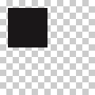

background(r, g, b, a=1.0) background(h, s, b, a=1.0) background(c, m, y, k, a=1.0) background(k, a=1.0) background(color) background(None)
|  |
background(None) rect(10, 10, 50, 50) |
canvas object accumulates a list of graphic objects as a side effect
of calls to the various plotdevice drawing commands. It can save the image to an output
file and can clear itself if you have more drawing to do.
canvas.size # returns (w, h) based on prior call to size() canvas._grobs # list of objects to be called when canvas.save() is called
canvas.clear() # erases all objects on the canvas and resets drawing state canvas.save(filename) # name must end with pdf, eps, png, tiff, jpg, gif, or mov
The export function is only of use to scripts that are
using PlotDevice externally via a from plotdevice.script import *
line. For scripts run within the application, use the Export as… commands in the file
menu. Exports can also be batched using the plotdevice command.
The export function returns a context
manager that takes care of canvas-setup and file-generation for both single images
and animations. By enclosing your drawing code in a with block, you can
ensure that the correct sequence of clear and save calls are
made to the canvas automatically. For instance these
two methods of generating a png are equivalent:
from plotdevice.script import * # export an image canvas.clear() ... # (do some drawing) canvas.save('output.png') # export an image # (with the context manager clearing and saving the canvas automatically) with export('output.png') as image: ... # (do some drawing)
If you specify a filename ending in mov (or gif if you also
pass a loop or fps argument), the export context
manager will return a Movie object. Each time you call its add
method, a new frame with the contents of the canvas will be added to the end of the
animation. Once you’ve added the final frame, you must call finish to wait
for the video encoder thread to complete its work.
As with the single-image version of the export call, you can use the
with statement in your code to tidy up some of the frame-drawing
boilerplate. All three examples are equivalent (note the use of a nested
with statement in the final example):
# export a 100-frame movie movie = export('anim.mov', fps=50, bitrate=1.8) for i in xrange(100): canvas.clear() # erase the previous frame from the canvas ... # (do some drawing) movie.add() # add the canvas to the movie movie.finish() # wait for i/o to complete # export a movie (with the context manager closing the file when done) with export('anim.mov', fps=50, bitrate=1.8) as movie: for i in xrange(100): canvas.clear() # erase the previous frame from the canvas ... # (do some drawing) movie.add() # add the canvas to the movie # export a movie # (with the movie.frame context manager clearing and adding the frame) with export('anim.mov', fps=50, bitrate=1.8) as movie: for i in xrange(100): with movie.frame: ... # draw the next frame
Creating PDF documents works the same way, letting you either manually
clear, add and finish the export or take advantage
of the with statement to hide the repetitive bits. Note that PDF exports use
the page attribute rather than frame:
# export a five-page pdf document pdf = export('multipage.pdf') for i in xrange(5): canvas.clear() # erase the previous page's graphics from the canvas ... # (do some drawing) pdf.add() # add the canvas to the pdf as a new page pdf.finish() # write the pdf document to disk # export a pdf document more succinctly with export('multipage.pdf') as pdf: for i in xrange(5): with pdf.page: ... # draw the next page
If you’re generating a series of images, export will automatically give
them consecutive names derived from the filename you pass as an argument. If the filename
is a simple ’name.ext’ string, the sequence number will be
appended with 4 characters of padding (’name-0001.ext’,
’name-0002.ext’, etc.). If the filename contains a block of
### characters, they will be replaced with the sequence number and zero
padded to the same width:
# export a sequence of images to output-0001.png, output-0002.png, ... # output-0099.png, output-0100.png with export('output.png') as image: for i in xrange(100): with image.sequence: ... # draw the next image in the sequence # export a sequence of images to 01-img.png, 02-img.png, ... # 99-img.png, 100-img.png with export('##-img.png') as image: for i in xrange(100): with image.sequence: ... # draw the next image in the sequence
speed(fps)
Using the speed() command causes your script to be interpreted as an animation. In
an animation, your drawing code does not live in the top-level of the script, but
instead is factored into a trio of methods defined in the script: setup(),
draw(), and stop(). The setup method is called
once at the beginning of a run, and stop is called once the run is halted.
The draw method is called repeatedly with the canvas being cleared between
calls. The global variable called FRAME will be incremented
before every draw and can be used to track progress.
The fps argument specifies the maximum speed of the animation in frames
per second. Note that this is only a maximum and complex animations will likely update
less frequently.
speed(30) def setup(): # initialize variables, etc. pass def draw(): # draw the next frame in the animation pass def stop(): # gather up accumulated data, print summary info, etc. pass
Classes
inch, cm, mm
scale factors used to set non-pixel dimensions with size()
pi, tau
trig quantities equal to a half- and full-circle respectively
RGB, HSB, CMYK
color modes used by colormode(), outputmode(), and others
CENTER, CORNER
transformation origins used by transform()
DEGREES, RADIANS, PERCENT
units understood by rotate()
LEFT, RIGHT, CENTER, JUSTIFY
text alignment modes used by align()
MOVETO, LINETO, CURVETO, CLOSE
types of PathElement
MITER, ROUND, BEVEL
path vertex styles set by joinstyle()
BUTT, ROUND, SQUARE
path endpoint styles set by capstyle()
NORMAL, FORTYFIVE
styles for the arrow() primitive
NUMBER, TEXT, BOOLEAN, BUTTON
datatypes for specifying a dynamic var()
WIDTH, HEIGHT
the current size of the canvas in the wake of the most recent size() call
FRAME, PAGE
the current iteration count in an animation (note that these are synonyms for the same value, counting up from 1)
MOUSEX, MOUSEY, mousedown
mouse events
KEY_UP, KEY_DOWN, KEY_LEFT, KEY_RIGHT, KEY_BACKSPACE, KEY_TAB, KEY_ESC
keyboard events
NodeBox Compatibility
Though their functionality has been subsumed by the commands listed above, the following NodeBox Setup commands may also be used in your scripts.
outputmode(mode)
outputmode(CMYK)
size(w, h)
size(400, 600) # the canvas is 400 X 600 points print WIDTH # prints 400 print HEIGHT # prints 600 size(20*cm, 20*cm) # the canvas is 20 x 20 cm |